This article considers and ponders the motivations of our benefactors to change our Master Template. We also touch on what it implies as well. This is a deep and heady article and not for the faint of heart. For we will discuss what our owners think about us.
"Theoretically, if the amnesia mechanisms being used against Earth could be broken entirely, IS-BEs would regain all of their memory!"
Introduction
In this POST, I discussed that I had sensed a change in the Master Template. And then I went on to describe was it was, how it works, and so on and so forth. At that time, I hadn’t a clue as to why it was changed, except to say that it is a very, very rare event.
But then I read one of the comments. All credit to Ohio Guy, that said this…
I posit that there are now two master templates that appear identical. Your representation shows a difference in color. One being blue, the other, a bronze color. These are now superimposed, one over the other. The service to self sentience’s are being assigned one, the service to others, in turn, assigned the other copy. This, I believe, is to streamline the sorting process such that one does not have to fight the urge to “go into the light” or wait for assistance from the mantids to direct us to be free in the non physical realm at the end of our individual world line. It is automatic. In other words, A base line for us, and a base line for them, (sts sentience). All with the subtle appearance of being laminated, one over the other, yet, to separate outcomes. (hence the streamlining of sorting) I wonder though, if delamination will occur at some point, whether individually or collectively.
Brilliant. Really.
And this from Memory Loss
Very interesting theory. Like a Harry Potter world sorting hat? It’s kinda weird because as I was pondering the implications of your theory, I stumbled upon a video: https://youtu.be/Xz9IJMMWP4M What if the service to others sentiences just overwhelms the service to self guys so much so their power structures just crumbles. We don’t fight with them, we absorb them. A change to the master template would likely have been necessary in such a scenario.
Why would the Type-1 greys do this?
I can tell you that they want to resolve this “Prison Planet” from the “dung heap” that it is now into a sorting, and reeducation location as efficiently as possible. And it’s not just our solar system but other ones under the same realm of control as well.
But wresting control of the source code, they can really make some changes happen. Just like on the movie the matrix.
So, it got me to start thinking.
What would happen? What could happen? At what benefit would it provide to anyone?
Benefits of changing the Master Template
Why the heck would anyone want to change the Master Template? Well, to answer that question you have to understand who made the Master Template to begin with and why.
Fundamentally, the “Old Empire” created the “Prison Planet” in this section of the galaxy. They created this reality, along with the associated Heaven (for humans) to go through as “punishment”. And thus all and everything associated with this local reality is a fabrication of the “Old Empire”.
And you must recognize that part of this fabrication is the idea of “pulsing consciousnesses” that cycle between wave and particle forms and moving about world-lines. Oh, perhaps, there are analogs in other areas of the universe, but in our “neck of the woods” what we go though is all a manufactured fabricated reality that is a remnant from the “Old Empire”.
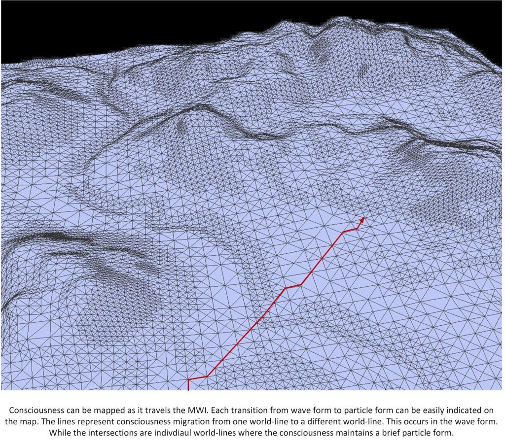
We know that the type-1 greys (of “The Domain”) want to dismantle this entire set-up, but it is very difficult. However, we also know that MAJestic was set up after “Alien Interview” and it seems obvious that they want to have a metered disassembly of the entire arrangement so that the very evil are contained, while the innocent are rehabilitated.
The members of the lost Battalion and many other IS-BEs on Earth, could be valuable citizens of The Domain, not including those who are vicious criminals or perverts. Unfortunately, there has been no workable method conceived to emancipate the IS-BEs from Earth. Therefore, as a matter of common logic, as well as the official policy of The Domain, it is safer and more sensible to avoid contact with the IS-BE population of Earth. Until such time as the proper resources can be allocated to [1] locate and destroy the "Old Empire" force screen... ... and [2] amnesia machinery ... ... and [3] develop a therapy to restore the memory of an IS-BE."
It seems to me that by changing the Master Template, it would enable the necessary therapies to restore IS-BE memories.
Keep in mind that the Master Template was designed specifically to entrap consciousnesses in this trap / snare of earth-bound reality.
If “The Domain” were interested in actually freeing souls and releasing consciousnesses from this reality, then the most direct and obvious method would be to alter the Master Template that this entire Prison Planet Environment is based around.
I gather from the events that I have sensed, good or bad, that they have been able to achieve this goal.
And then what?
Benefits of Making multiple templates
Consider this statement from Alien Interview…
The conflicting cultural and ethical moral codes of the IS-BEs on Earth is unusual in the extreme.
If you are able to sort consciousnesses by sentience, then the sorting effort could result in different Master Templates for different sentience’s.
"...the IS-BEs of Earth continue to behave very badly toward each other. This behavior, however, is heavily influenced by the "hypnotic commands" given to each IS-BE between lifetimes."
You could have a Master Template for each of the following major sentience types in this reality at this time…
- Service for self.
- Service for another.
- Service for others.
- Disjointed.
And those templates would then adjust the consciousness interaction within this reality. It would…
- Keep those that should remain in the “Prison Environment” a little longer. This would be accomplished by making them focus on the worldly pleasures and pain. So that they would not be able to focus on egress from this environment.
- Provide a “rehabilitation plan” for those that need to undo the damage that this environment has done to them, and help sort them so that they can eventually egress from this environment. Their life would be a little bit easier, and not so contentious. So that they would be able to ponder their existence and see order and purpose.
- Provide a much easier path of egress from this prison region for those who indicate a functional desire to do great things for others without personal profit. The affirmation prayers should become easier to manifest, and their general life path should be far less contentious and troublesome. Making it easier to think of higher purposes and roles after egress.
- Provide a substantive restructuring plan for those that need it. The details of which could become very harsh, but necessary.
So, depending on the sentience, the Master Template would provide a simpler way to track, control, and eventually release all the inmates from this environment.
For service to others sentience it would look like this…
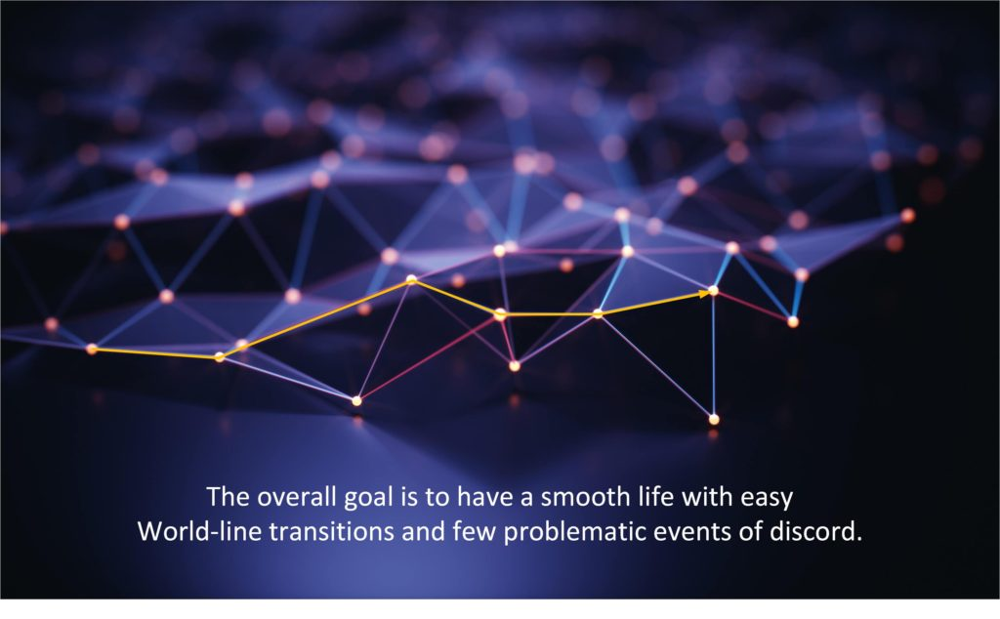
How they would differ from each on from a user point of view.
From the point of view of an end user, a consciousness, the pre-birth world-line template (which is derived from the Master Template) would look the same. While you were in Heaven, you would work with the local elders and your Mantid to configure your next reincarnation.
The evil and self-centered individuals would select a life-line to place upon a pre-birth world-line template to achieve their desires. Lust, greed, power, sex, gluttony, etc. The system in making the selection and the research and options available will not change.
And it will also remain the same. Individuals would be given “missions” and “objectives” are centered about “bettering themselves”, “obtaining experiences” and “perfecting themselves”.
Unless you were specifically keyed to notice the subtle changes of a rewritten source code, you won’t realize that anything would be different.
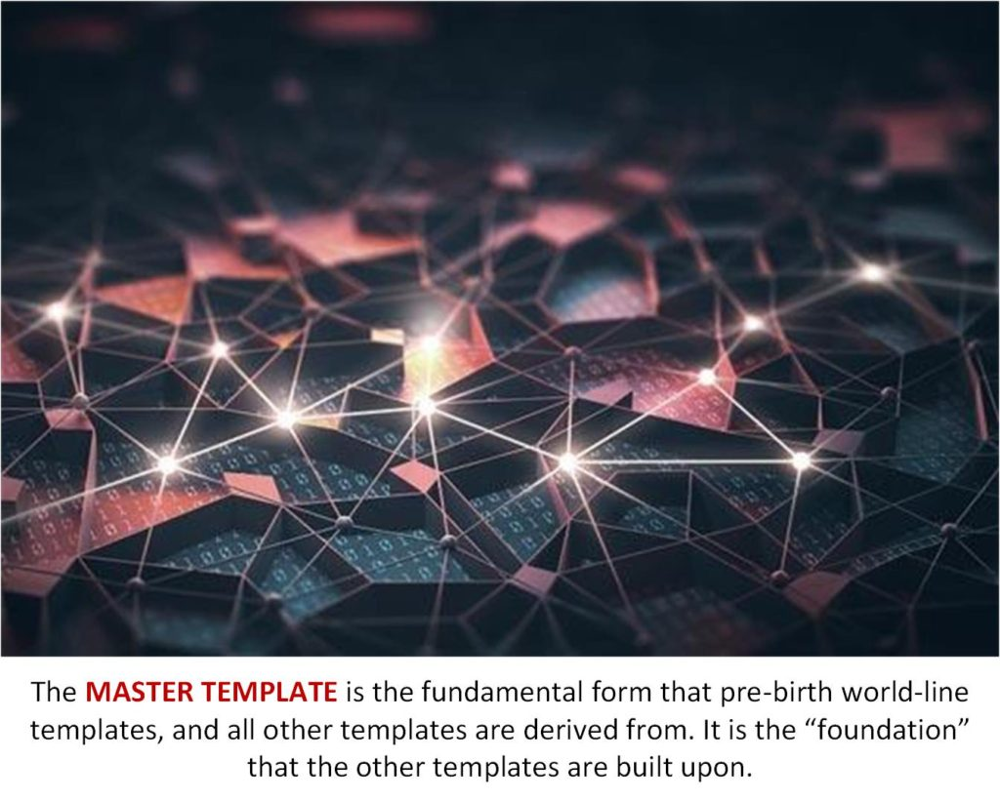
The user wouldn’t be able to see a difference during the planning stage in Heaven
You simply couldn’t see a difference. Difficult tasks will still be difficult. Easy tasks and goals will still be easy. Highs and lows, “mountains” and “valleys” will still exist.
The changes will not be what is obvious in the physical reality.
Instead it will be the non-physical aspects of the consciousness. Thoughts that one would have. Or the ability to dream, having lucid dreams. The ability to have PSI or ESP and the ability to sense the non-physical reality will be changed.
Most notably would be the ability to control and direct thoughts and desires. Evil and selfish people would have that ability suppressed, while those who are generous would find that they would have that ability enhanced. Thus prayer affirmations campaigns would have results much faster in materialization than prior to the change in the Master Template.
This would be right across all levels and even the most trivial thoughts and wishes from one’s early years would manifest without problem.
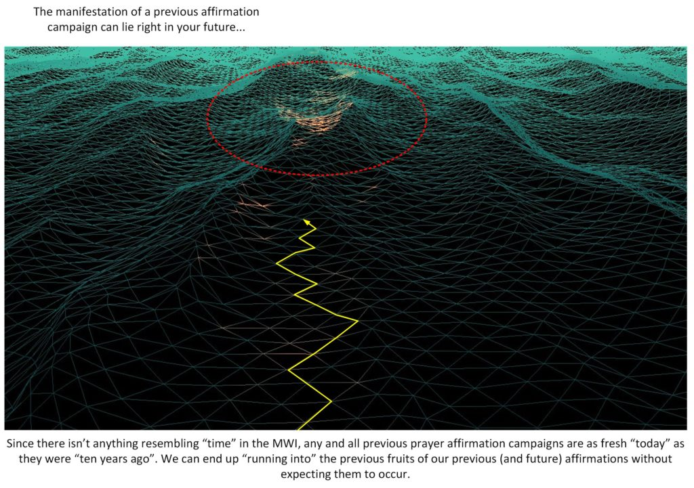
The code for the Master Template
We do not know what the “code” is for the Master Template. Obviously it transcends the physical realm and is involved in so many levels.And obviously it is a very detailed and involved system involving many layers.
“Mystery reinforces the walls of the prison. The “Old Empire” feared that the IS-BEs on Earth might regain their memory. Therefore, one of the primary functions of The “Old Empire” priesthood is to prevent IS-BEs on Earth from remembering who they really are, how they came to Earth, where they came from. The “Old Empire” operators of the prison system, and their superiors, do not want IS-BEs to remember who murdered them, captured them, stole all of their possessions, sent them to Earth, gave them amnesia and condemned them to eternal imprisonment! Imagine what might happen if all of the inmates in the prison suddenly remembered that they have the right to be free! What if they suddenly realized that they have been falsely imprisoned and rise up as one against the guards? They are afraid to reveal anything that looks like the civilization of the inmates home planets. A body, a piece of clothing, a symbol, a space ship, an advanced electronics device, or any other remnant of civilization from a home planet could “remind” a being and rekindle his memory. Sophisticated technologies of entrapment and enslavement, which were developed over millions of years in the “Old Empire”, have been applied to the IS-BEs on Earth with the intention to create a false facade for the prison. These facades were installed on Earth in totality, all at once. Every piece is a fully integrated part of the prison system. This includes a religion of mumbo-jumbo double-speak. Every pyramid civilization uses this as part of a control mechanism to keep the population enslaved by force, by fear and by ignorance. The indecipherable muddle of irrelevant information, geometric designs, mathematical calculation, astronomical alignments, are part of a false spirituality based on solid objects, rather than immortal spirits, in order to confuse and disorient the IS-BEs on Earth. When the body of a person died they were buried with their Earthly possessions, including their former body wrapped in linen, to sustain their “soul” or “Ka” after death. An IS-BE does not “have” as soul. An IS-BE is a soul.” — Excerpted from the Top Secret transcripts published in the book, Alien Interview
But we can make some assumptions based on what we know of history.
When Nazi Germany fell, all of their advanced technology was up for grabs, and the United States went forward with Operation Paperclip to recover as much knowledge and technology as possible….
What Was Operation Paperclip?
As World War II was entering its final stages, American and British organizations teamed up to scour occupied Germany for as much military, scientific and technological development research as they could uncover.
Trailing behind Allied combat troops, groups such as the Combined Intelligence Objectives Subcommittee (CIOS) began confiscating war-related documents and materials and interrogating scientists as German research facilities were seized by Allied forces. One enlightening discovery—recovered from a toilet at Bonn University—was the Osenberg List: a catalogue of scientists and engineers that had been put to work for the Third Reich.
n a covert affair originally dubbed Operation Overcast but later renamed Operation Paperclip, roughly 1,600 of these German scientists (along with their families) were brought to the United States to work on America’s behalf during the Cold War. The program was run by the newly-formed Joint Intelligence Objectives Agency (JIOA), whose goal was to harness German intellectual resources to help develop America’s arsenal of rockets and other biological and chemical weapons, and to ensure such coveted information did not fall into the hands of the Soviet Union.
Although he officially sanctioned the operation, President Harry Truman forbade the agency from recruiting any Nazi members or active Nazi supporters. Nevertheless, officials within the JIOA and Office of Strategic Services (OSS)—the forerunner to the CIA—bypassed this directive by eliminating or whitewashing incriminating evidence of possible war crimes from the scientists’ records, believing their intelligence to be crucial to the country’s postwar efforts.
One of the most well-known recruits was Wernher von Braun, the technical director at the Peenemunde Army Research Center in Germany who was instrumental in developing the lethal V-2 rocket that devastated England during the war. Von Braun and other rocket scientists were brought to Fort Bliss, Texas, and White Sands Proving Grounds, New Mexico, as “War Department Special Employees” to assist the U.S. Army with rocket experimentation. Von Braun later became director of NASA’s Marshall Space Flight Center and the chief architect of the Saturn V launch vehicle, which eventually propelled two dozen American astronauts to the Moon.
Although defenders of the clandestine operation argue that the balance of power could have easily shifted to the Soviet Union during the Cold War if these Nazi scientists were not brought to the United States, opponents point to the ethical cost of ignoring their abhorrent war crimes without punishment or accountability.
Enter The Domain
So The Domain vanquished The “Old Empire” and took control of this section of the galaxy. Still, it has taken years to understand and recover the long lost technologies that the Old Empire utilized.
As from the “Alien Interview”, it seems that once systems were designed and utilized, they were left to fallow or forgotten. Thus making the blueprints for the “Prison Planet” quite difficult to obtain.
Most certainly the type-1 greys had to have spent some tremendous amounts of time and effort to recover what ever they could concerning the Prison Complexes and systems. I am sure that it was a low priority, but necessary.
Only a demonic, self-serving government would employ a “logic” or “science” to conceive that an “ultimate solution” to any problem is to murder and permanently erase the memory of every artist, genius, skilled manager, and inventor, and cast them into a planetary prison together with political opponents, killers, thieves, perverts, and disabled beings of an entire galaxy! Once the IS-BEs expelled from the “Old Empire” arrived on Earth, they were given amnesia, and hypnotically tricked into thinking that something else had happened to them. The next step was to implant the IS-BEs into biological bodies on Earth. The bodies became the human populations of “false civilizations” which were designed and installed in the minds of IS-BEs to look completely unlike the “Old Empire”. — Except from the Top Secret manuscripts from 1947 Roswell, published in the book ALIEN INTERVIEW
I like and want to believe that a future lies ahead for all of us. And that the type-1 greys are making this happen. The entire environment around our planet is but the walls of a gigantic and enormous prison.
“Mystery reinforces the walls of the prison. The “Old Empire” feared that the IS-BEs on Earth might regain their memory. Therefore, one of the primary functions of The “Old Empire” priesthood is to prevent IS-BEs on Earth from remembering who they really are, how they came to Earth, where they came from. The “Old Empire” operators of the prison system, and their superiors, do not want IS-BEs to remember who murdered them, captured them, stole all of their possessions, sent them to Earth, gave them amnesia and condemned them to eternal imprisonment! Imagine what might happen if all of the inmates in the prison suddenly remembered that they have the right to be free! What if they suddenly realized that they have been falsely imprisoned and rise up as one against the guards? They are afraid to reveal anything that looks like the civilization of the inmates home planets. A body, a piece of clothing, a symbol, a space ship, an advanced electronics device, or any other remnant of civilization from a home planet could “remind” a being and rekindle his memory. Sophisticated technologies of entrapment and enslavement, which were developed over millions of years in the “Old Empire”, have been applied to the IS-BEs on Earth with the intention to create a false facade for the prison. These facades were installed on Earth in totality, all at once. Every piece is a fully integrated part of the prison system. This includes a religion of mumbo-jumbo double-speak. Every pyramid civilization uses this as part of a control mechanism to keep the population enslaved by force, by fear and by ignorance. The indecipherable muddle of irrelevant information, geometric designs, mathematical calculation, astronomical alignments, are part of a false spirituality based on solid objects, rather than immortal spirits, in order to confuse and disorient the IS-BEs on Earth. When the body of a person died they were buried with their Earthly possessions, including their former body wrapped in linen, to sustain their “soul” or “Ka” after death. An IS-BE does not “have” as soul. An IS-BE is a soul.” — Excerpted from the Top Secret transcripts published in the book, Alien Interview
Most certainly they had to study the construction and the systems associated with the entire “Prison Planet”.
And then they most certainly had to come up with a phased plan to provide release egress or parole to the many innocents in this entire “black hole” environment.
And it’s only a matter of time until a point will be reached where the inmates can start getting their much needed “walking papers”. Perhaps, just perhaps, we are all part of the first batch of those who have this opportunity.
I don’t know. But I do have hope.
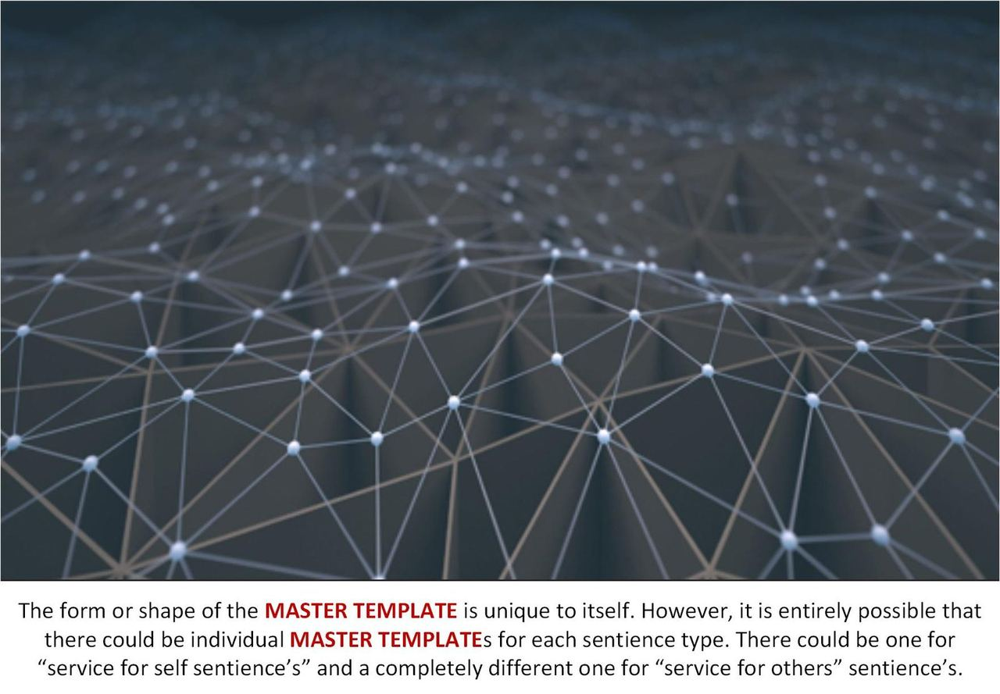
This must absolutely include a system for prison release… a very careful release system and integration into society.
Where is the “Old Empire”?
Where the records regarding the construction of this entire prison complex must be stored somewhere.
Right?
"Although the military base of the "Old Empire" was destroyed, unfortunately, much of the vast machinery of the IS-BE force screens, the electroshock / amnesia / hypnosis machinery continues to function in other undiscovered locations right up to the present moment. The main base or control center for this "mind control prison" operation has never been found. So, the influences of this base, or bases, are still in effect."
The “blue prints” and the program / project management, and all the rest has to be found somewhere.
If you were from The Domain where would you look?
"She told me that The Domain Expeditionary Force first entered into the Milky Way galaxy very recently -- only about 10,000 years ago. Their first action was to conquer the home planets of the "Old Empire" (this is not the official name, but a nick-name given to the conquered civilization by The Domain Forces) that served as the seat of central government for this galaxy, and other adjoining regions of space. These planets are located in the star systems in the tail of the Big Dipper constellation. She did not mention which stars, exactly."
Well, we know that the stars in the “tail” of “The Big Dipper” constellation are…
So you can figure that the “home planets” for the “Old Empire” is in the geographic space around Mizar and Alkaid. Not these large hot and short-lived stars, but rather the cooler and fainter stars that lie around them.
As far as the general geographical location goes, however…
Alkaid, Eta Ursae Majoris (η UMa) is a blue main sequence star with an apparent magnitude of 1.86, located at a distance of 103.9 light years from Earth. It is the easternmost star of the Big Dipper. It forms the Dipper’s handle with its bright neighbours, Mizar (ζ UMa) and Alioth (ε UMa), while Megrez (δ UMa), Phecda (γ UMa), Dubhe (α UMa) and Merak (β UMa) form the Dipper’s bowl. Alkaid is the third brightest star in the constellation Ursa Major, after Alioth and Dubhe, and the 38th brightest star in the sky. It shares the 38th place with the bright giant Sargas (Theta Scorpii) in the constellation Scorpius. The stars are only slightly fainter than the blue giant Kaus Australis (Epsilon Sagittarii), the brightest star in Sagittarius, and slightly fainter than the orange giant Avior (Epsilon Carinae), the third brightest star in the constellation Carina.
And the other star…
Mizar, Zeta Ursae Majoris (ζ UMa), is a quadruple star system in Ursa Major. It has a combined apparent magnitude of 2.04 and lies at a distance of 82.9 light years from Earth. It is the fourth brightest star in Ursa Major. Mizar is the middle star of the Big Dipper‘s handle and it forms a visual double with Alcor, a fainter binary star located at a separation of about 12 arcminutes.
And without getting involved in the history behind these stars, their sizes, and all those interesting facts. Let’s focus on location.
- Alkaid = 103.9 Light Years away
- Mizar = 82.9 Light Years away
And this tells us a lot.
Our milkyway galaxy is 100,000 light-years across, and these two stars lie around 100 light years away. Or roughly 1/1000 of the size of the galaxy. So roughly the “Old Empire” is not a far away center of civilization, but rather (relatively) nearby.
Sort of like one of the suburbs in a city.
With the core solar systems of that “Old Empire” as close as 35 to 50 light years away. (The 100 light year apex center is just a reference point for an empire that might have core planets around 75 to 100 light years in diameter.)
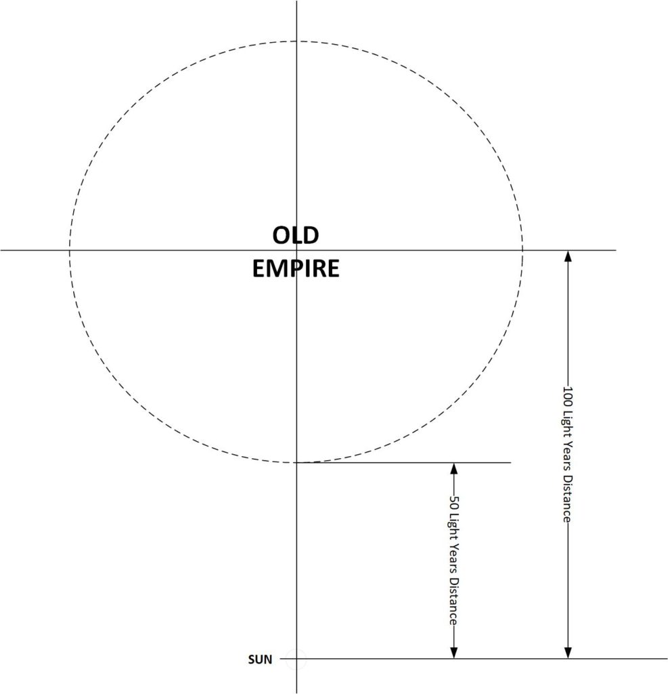
We might imagine that their relative proximity to us would be on the order of…
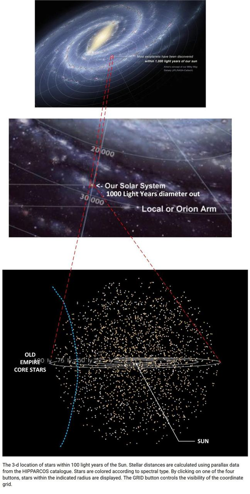
The “Old Empire” is relatively close to our stellar neighborhood.
So we can expect that over the last few decades of MAJestic involvement that The Domain has dedicated a small contingent of researchers to investigate the “Old Empire” records to discover the operation and plans for our regional “Prison Planet”.
Our solar system is not in a major populated area of the galaxy
We are off to the side, in and among devastated previously populated worlds still recovering from ancient space wars and fiascos.
Earth is very distant from the center of the galaxy and from any other significant galactic civilization. This isolation makes it unsuitable for use, except as a "pit stop" or jumping off point along the way between galaxies. The moon and asteroids are far more suitable for this purpose because they do not have any significant gravity.
Where is the local machinery of control?
No one knows, but perhaps this statement might provide us with some clues…
"In the earliest times the IS-BEs sent to prison Earth lived in India."
Some more thoughts
"Furthermore, there has been no operation undertaken to seek out, discover and destroy the vast and ancient network of electronics machinery that create the IS-BE force screens at this end of the galaxy. Until this has been done, we are not able to prevent or interrupt the electric shock operation, hypnosis and remote thought control of the "Old Empire" prison planet."
I really do not have any idea how the Master Template could be changed, or how The Domain would go about changing them. Nor do I have any idea on the kinds of systems that would be involved in this system. But you know, we all don’t really need to know the specifics. Just what is going on.
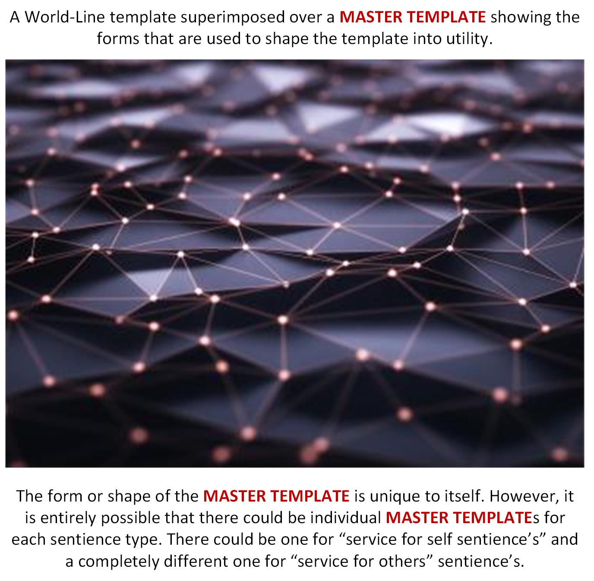
The system that is in place seems to be very robust and expansive and thus can be applied to a great diversity of “peoples” , societies, species and cultures…
And, the very unusual combination of "inmates" on Earth - criminals, perverts, artists, revolutionaries and geniuses - is the cause of a very restive and tumultuous environment. The purpose of the prison planet is to keep IS-BEs on Earth, forever. Promoting ignorance, superstition, and war between IS-BEs helps to keep the prison population crippled and trapped behind "the wall" of electronic force screens. IS-BEs have been dumped on Earth from all over the galaxy, adjoining galaxies, and from planetary systems all over the "Old Empire", like Sirius, Aldebaron, the Pleiades, Orion, Draconis, and countless others. There are IS- BEs on Earth from unnamed races, civilizations, cultural backgrounds, and planetary environments. Each of the various IS-BE populations have their own languages, belief systems, moral values, religious beliefs, training and unknown and untold histories. These IS-BEs are mixed together with earlier inhabitants of Earth who came from another star system more than 400,000 years ago to establish the civilizations of Atlanta and Lemuria. Those civilizations vanished beneath the tidal waves caused by a planetary "polar shift", many thousands of years before the current "prison" population started to arrive. Apparently, the IS-BEs from those star systems were the source of the original, oriental races of Earth, beginning in Australia. On the other hand, the civilizations set up on Earth by the "Old Empire" prison system were very different from the civilization of the "Old Empire" itself, which is an electronic space opera, atomic powered conglomeration of earlier civilizations that were conquered with nuclear weapons and colonized by IS-BEs from another galaxy.
What is the most important template?
Well, they are all important. It’s just that each template has it’s own very unique roles that it plays in the shaping of our experiences within this reality.
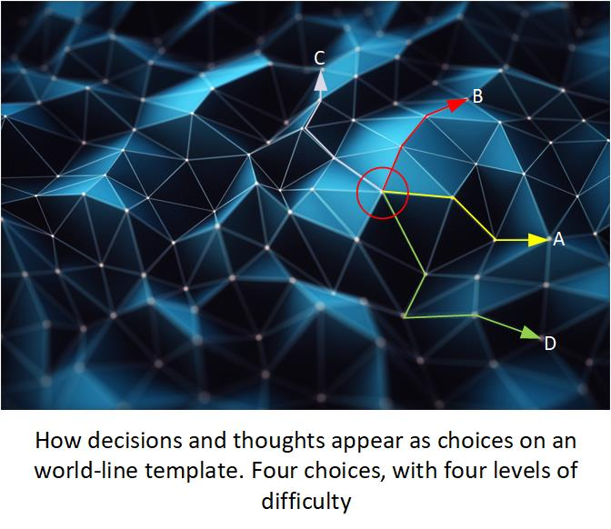
You could argue that the roles of each template would be as follows…
- Master Template. The source code for consciousness movement in our reality universe.
- Pre-Birth World-Line Template. A fated life that we will live in the physical reality to obtain experiences with.
- A World-Line Template. A new template that consciousness intentionally creates by directed thoughts. It replaces the Pre-Birth World_line Template.
- A World-Line. A frozen snapshot in “time” that our consciousness visits momentarily while it is in particle form.
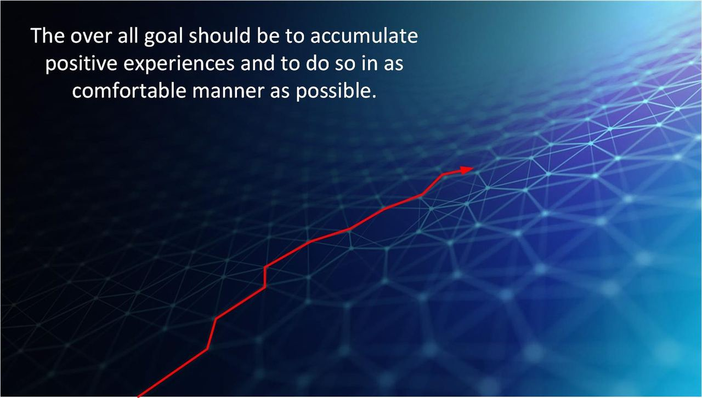
How important is the Master Template?
It’s very important. The entire way the “Prison Planet” works is to keep us living this never ending reincarnation loop over and over again on the promise of something…
The net result is that an IS-BE is unable to escape because they can't remember who they are, where they came from, where they are. They have been hypnotized to think they are someone, something, sometime, and somewhere other than where they really are.
…for some people it is an eternal life in Heaven. For other’s it might be improvements to eventually become a saint. For still others, maybe an advancement to become another species. It’s all promises…
…just go back one more time and experience X, Y, Z and then you will be better.
But it is the control of our thoughts that imprison us.
Eventually The Domain discovered that a wide area of space is monitored by an "electronic force field" which controls all of the IS-BEs in this end of the galaxy, including Earth. The electronic force screen is designed to detect IS-BEs and prevent them from leaving the area. If any IS-BE attempts to penetrate the force screen, it "captures" them in a kind of "electronic net". The result is that the captured IS-BE is subjected to a very severe "brainwashing" treatment which erases the memory of the IS-BE. This process uses a tremendous electrical shock, just like Earth psychiatrists use "electric shock therapy" to erase the memory and personality of a "patient" and to make them more "cooperative". On Earth this "therapy" uses only a few hundred volts of electricity. However, the electrical voltage used by the "Old Empire" operation against IS-BEs is on the order of magnitude of billions of volts! This tremendous shock completely wipes out all the memory of the IS- BE. The memory erasure is not just for one life or one body. It wipes out all of the accumulated experiences of a nearly infinite past, as well as the identity of the IS-BE! The shock is intended to make it impossible for the IS-BE to remember who they are, where they came from, their knowledge or skills, their memory of the past, and ability to function as a spiritual entity. They are overwhelmed into becoming a mindless, robotic non-entity. After the shock a series of post hypnotic suggestions are used to install false memories, and a false time orientation in each IS-BE. This includes the command to "return" to the base after the body dies, so that the same kind of shock and hypnosis can be done again, and again, again -- forever. The hypnotic command also tells the "patient" to forget to remember. What The Domain learned from the experience of this officer is that the "Old Empire" has been using Earth as a "prison planet" for a very long time -- exactly how long is unknown -- perhaps millions of years. So, when the body of the IS-BE dies they depart from the body. They are detected by the "force screen", they are captured and "ordered" by hypnotic command to "return to the light". The idea of "heaven" and the "afterlife" are part of the hypnotic suggestion -- a part of the treachery that makes the whole mechanism work. After the IS-BE has been shocked and hypnotized to erase the memory of the life just lived, the IS-BE is immediately "commanded", hypnotically, to "report" back to Earth, as though they were on a secret mission, to inhabit a new body. Each IS-BE is told that they have a special purpose for being on Earth. But, of course there is no purpose for being in a prison -- at least not for the prisoner.
The Master Template changes how the thoughts interact with our reality. And by changing it, and offering specialized templates to special sentience’s it becomes far easier to manage the egress or imprisonment of wayward consciousnesses.
And so…
If you have a service to others sentience, and recognize that you are a powerful ultimate being yourself, then you can be released from this Prison Planet though use of directed thought.
"It is easy to teach this altered notion to beings who do not want to be responsible for their own lives. Slaves are such beings. As long as one chooses to assign responsibility for creation, existence and personal accountability for one's own thoughts and actions to others, one is a slave."
A final word
Go out and take in some good fresh air. Splurge and buy yourself a premium lunch or drink. Put down the cell phone for a few minutes and just absorb the world around you. Everything here is positive and upbeat, and if you are a MM follower and believer then your futures all look really, really bright.
Have a great day! Here’s a video that I took about15 minutes ago.
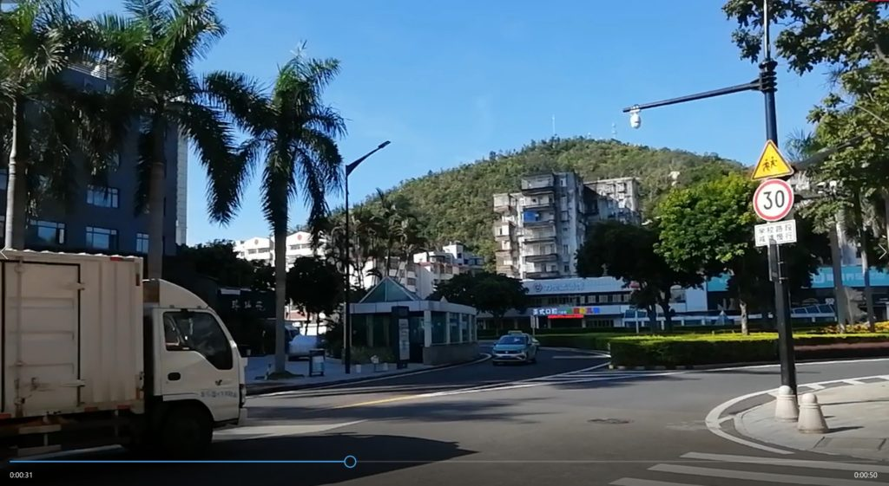